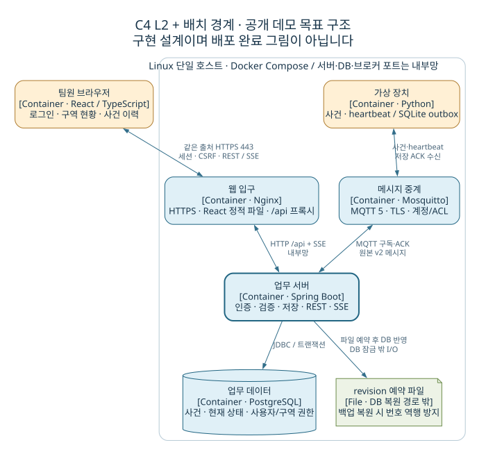

다음 구현: 웹에서 확인하고 프론트 담당자에게 넘기기
설계 2026-11-13 · 진행 갱신 2026-11-14 · M1 API 구현, 화면·배포 전
학습을 잠시 뒤로 미루고, MQTT 수신부터 로그인한 웹 화면까지 먼저 완성합니다. 지금까지 만든 저장 코드를 그대로 사용합니다. 완성 후 실제 파일과 실행 흐름을 따라 학습합니다.

그림을 크게 열기 ↗완성되면 이렇게 사용합니다
- 팀원이 HTTPS 주소로 접속해 로그인합니다.
- 가상 장치가 보고한 구역 상태·차량 분류·안내 횟수·카메라 상태를 확인합니다.
- 사건을 눌러 이력과 상세 내용을 봅니다.
- 장치 송신을 멈추면 연결 지연/끊김이 표시됩니다. 웹 연결이 끊겼다가 돌아와도 최신 상태로 복구됩니다.
- 프론트 담당자는 저장소를 받아 같은 화면을 실행하고 UI를 개선합니다.
화면은 로그인 / 구역 현황 / 사건 목록·상세 3종입니다. ‘가상 장치 데모’를 표시하고 실제 차량을 감지한 것처럼 표현하지 않습니다.
무엇을 만들까요?
| 현재 확인한 것 | 이번에 완성할 것 | 다음 범위 |
|---|---|---|
| MQTT 사건 수신·검증·DB 저장 | 로그인·구역별 조회 권한 | 실제 보드·AI·현장 출력 |
| 정상/중복/충돌/역순 처리 | 상태·사건 조회 API | 관리자 명령·정책 변경·review 작성 |
| DB 커밋 후 저장 완료 ACK | heartbeat·실시간 화면 갱신 | 사진 업로드·조회 |
| 자동 시험과 실제 MQTT/SQL 확인 | React·가상 장치·HTTPS 배포·인계 | 현장 성능·대규모 운영 |
‘이번에 완성’은 조회 가능한 첫 인계판 전체입니다. v1.43의 모든 제품 기능을 구현 완료했다는 뜻은 아닙니다. 공개 URL에는 팀원 로그인이 필요하며 GitHub 비공개 저장소를 public으로 바꾸지 않습니다.
구현 순서
| 순서 | 결과 |
|---|---|
| M0. 계약·DB 준비 | 빠진 웹 오류 코드, 구역 권한 테이블, 초기화/복구 기준 |
| M1. 로그인·조회 | 구현·시험 완료. 7개 경로·계정·실행 안내 |
| M2. 실시간 연동 | heartbeat, 15초 초과 STALE / 30초 초과 OFFLINE, SSE |
| M3. React 화면 | 실제 API 연결, 빈 상태·오류·재로그인·재연결 처리 |
| M4. 자동 시나리오 | 가상 장치로 정상·장애·재전송을 재현하는 통합 시험 |
| M5. 운영 준비 | Docker 배포, HTTPS, 비밀값·포트 관리, 복원 시험 |
| M6. 외부 확인·인계 | 외부 주소 접속 검증, 실행 안내, 프론트 수정 경계와 학습 지도 |
터미널 명령을 하나씩 따라 하는 실습을 매 단계의 선행 조건으로 두지 않습니다. 구현과 검증을 진행한 뒤 완료 내용·실패한 점·남은 일을 보고합니다.
지금 정한 것과 나중에 필요한 정보
Spring Boot·PostgreSQL·Mosquitto를 유지합니다. 프론트는 React + TypeScript + Vite, 실시간 갱신은 SSE, 배포는 단일 Linux 서버 + Docker Compose + Nginx로 정합니다. 서버와 브라우저는 같은 HTTPS 주소를 사용합니다.
실제 공개 직전에는 사용할 서버·예산, 도메인/DNS 권한, 팀원 계정 전달 대상, 백업과 revision 기록의 보관 위치가 필요합니다. 코드·자동 시험·로컬 배포 구성은 이 정보 없이도 먼저 만들 수 있습니다. 카메라와 실험 장소 확정은 이번 웹 구현의 선행 조건이 아닙니다.
상세 자료
- 구현 설계서: API·세션·DB·실시간·배포의 구현 기준
- 결정 기록 ADR-005: v1.43에서 구체화하거나 보완한 부분
- 설계 검토서: 발견한 빈틈과 인수 시험
- 작업·인수 조건 JSON: 다음 개발 AI가 실행할 순서와 완료 조건
이 문서는 전체 목표와 순서입니다. 실제 기능의 작성·시험·공개 여부는 현재 상태에서 따로 관리합니다.